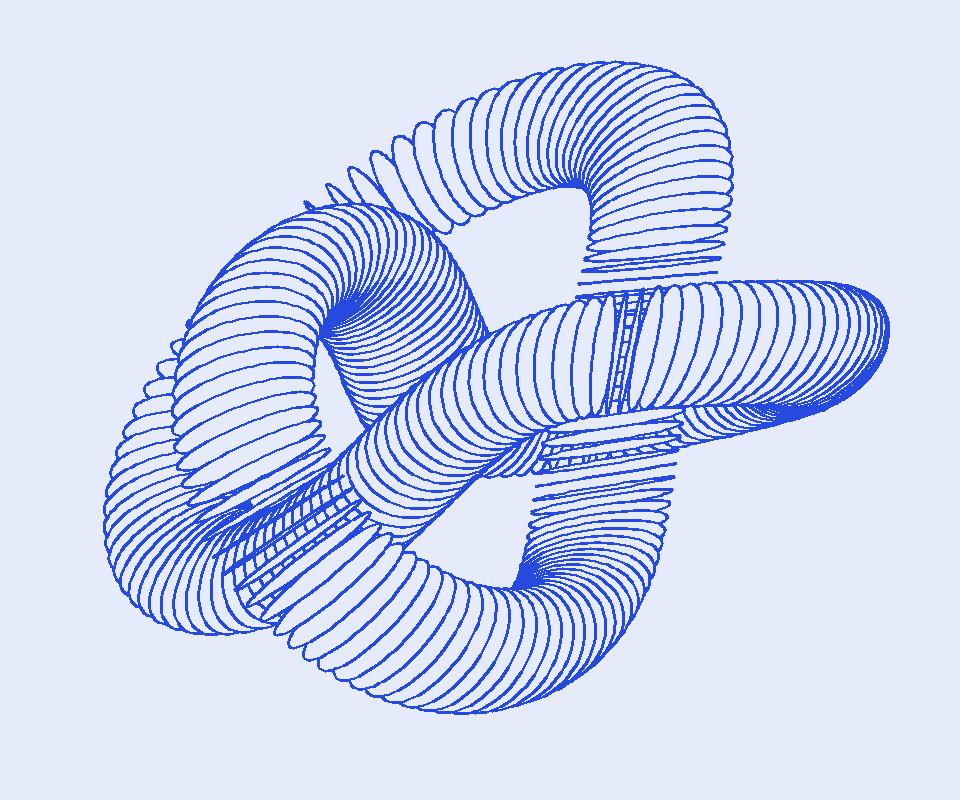

Steruję OpenCode z telefonu, łączę urządzenia przez przeglądarkę i zamieniam historię słuchania w paragon.

Zdalne sterowanie sesjami OpenCode z Androida.
Historia słuchania ze Spotify w formie paragonu do wydruku.